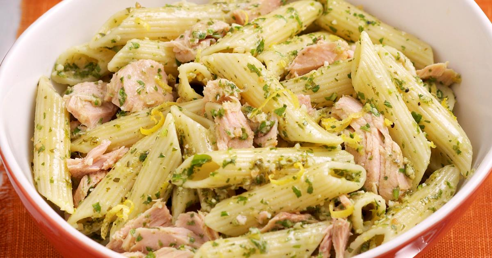

Tuna Pesto w/ Penne Pasta

A twist to an Italian staple, this dish is perfect for working adults who only got so much time to prepare good meals.
Ingredients: (good for 4 people)
- 500g Penne pasta
- 2 tbsp Pesto sauce Note: I use ready-made Pesto sauce.
- 3 cloves Garlic minced
- 1 half Onion minced
- 1 slice Cheddar cheese
- 1 can of Tuna flakes in oil
- 1 tsp Basil minced
- 1 tsp Parsley minced
- 3 tbsp Olive oil
Instructions: (the way I like it)
- Cook Penne pasta in boiling water for 8-10 mins.
- In medium heat, pour Olive oil onto a pan.
- Sauté the Garlic and Onion until Garlic turns light brown.
- Add the Tuna, Pesto sauce, and Cheddar cheese.
- Add the Penne pasta and mix the ingredients.
- Add the Basil and Parsley for added aroma.
- It's Ready! Serve with a sprinkle of Parmesan cheese and Enjoy!